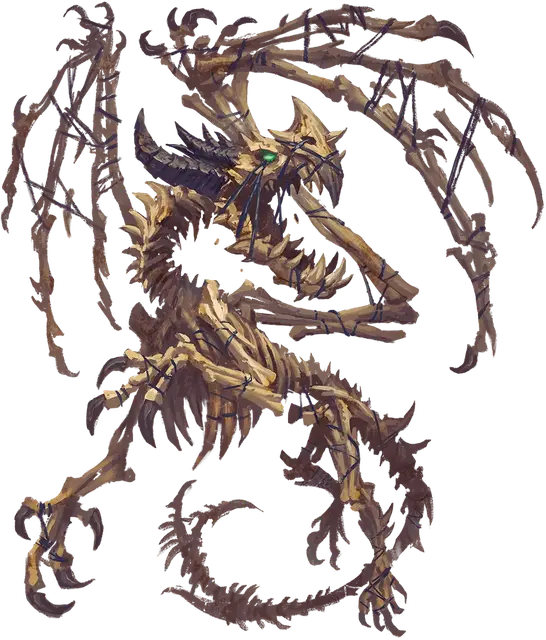

Голем из драконьих костей
Dragonbone Golem
Большой Конструкт, без мировоззрения

Класс Доспеха 17 (природный доспех)
Хиты 161 (19к10 + 57)
Скорость 40 футов
| мод | спас | ||
|---|---|---|---|
| СИЛ | 20 | +5 | +5 |
| ЛОВ | 10 | +0 | +0 |
| ТЕЛ | 17 | +3 | +3 |
| мод | спас | ||
|---|---|---|---|
| ИНТ | 3 | −4 | −4 |
| МДР | 11 | +0 | +0 |
| ХАР | 10 | +0 | +0 |
Иммунитет к урону яд
Иммунитет к состояниям паралич, очарование, отравление, окаменение, истощение, испуг
Чувства тёмное зрение 60 футов, пассивное Восприятие 10
Языки Понимает Драконий и языки своего создателя, но не говорит
Опасность 11 (7200 опыта)
Бонус мастерства +4
Особенности
Аура страха. Каждое существо по выбору голема, которое начинает свой ход в пределах 20 фт. от него, должно совершить спасбросок Мудрости Сл 15, если только голем не недееспособен. При провале существо испугано до начала своего следующего хода. При успехе существо становится невосприимчивым к Ауре страха этого голема в течение следующих 24 часов.
Сопротивление магии. Голем совершает с преимуществом спасброски от заклинаний и прочих магических эффектов.
Необычная природа. Голему не требуется воздух, пища, вода или сон.
Действия
Мультиатака. Голем совершает одну атаку Крылом и две атаки Разрывом.
Крыло. Рукопашная атака оружием: +9 к попаданию, досягаемость 5 фт., одна цель. Попадание: 12 (2к6+5) колющего урона. Если целью является существо Среднего размера или меньше, его прижимает костяным крылом и оно становится опутанным. У голема есть два крыла, каждое из которых может удерживать одну цель. Если существо опутано одним из крыльев, голем не может атаковать с его помощью. Любое существо, удерживаемое крылом, может освободиться в начале своего хода при помощи успешной проверки Атлетики Сл 17.
Разрыв. . Рукопашная атака оружием: +9 к попаданию, досягаемость 5 фт., одна цель. Попадание: 12 (2к6+5) колющего урона плюс 5 (1к10) урона некротической энергией.
Дыхание окаменения (перезарядка 5-6). Голем испускает изо рта 60-футовый конус газа окаменения. Каждое существо в этой области должно преуспеть в спасброске Телосложения Сл 15, иначе получит 35 (10к6) урона ядом и станет опутанным, начиная превращаться в камень. Опутанное существо должно повторить спасбросок в конце своего следующего хода. В случае успеха эффект заканчивается; в противном случае существо окаменевает.
Описание
Голем из драконьих костей состоит из костей дракона, соединенных вместе адамантиновой проволокой в форме дракона, оживленного с помощью присущей костям магии. Большинство големов из драконьей кости создаются могущественными драконами из костей побежденных соперников. На каждой кости выгравированы сложные символы, которые позволяют оживляющей силе течь через форму голема.
Стойкость и послушание големов из драконьей кости делают их отличными стражами логова для их создателей-драконов, а их сверхъестественно устрашающее присутствие является сильным сдерживающим фактором против вторжения.